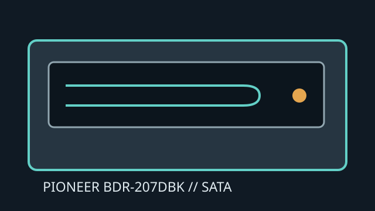

[ INTERNAL BLU-RAY WRITER ]
Pioneer BDR-207DBK
Internal SATA BD/DVD/CD writer. It supports writing to BD-R and BD-RE; the suffix-specific documentation should be used when checking OEM or firmware differences.

IDENTIFICATION: Pioneer BDR-207DBK, half-height desktop drive; do not infer the same capabilities for similarly named external or slim drives.
Documented specifications
| Media read/write formats | Reads BD-ROM, BD-R/RE, DVD-ROM, DVD±R/RW, DVD±R DL, DVD-RAM and CD-ROM/R/RW. Writes BD-R/RE, DVD±R/RW, DVD±R DL, DVD-RAM and CD-R/RW. |
|---|---|
| Maximum speeds | BD-R up to 12×; BD-RE up to 2×. DVD±R up to 16×, DVD±R DL up to 8×; DVD+RW up to 8×, DVD-RW up to 6×; CD-R up to 40× and CD-RW up to 24×. BD-ROM read up to 10×. |
| Interface and physical bay | Internal 5.25-inch half-height tray-loading drive with SATA data and power. Requires a desktop bay with suitable mounting, clearance and cable access. |
| Host and firmware compatibility | Host must provide SATA and ATAPI optical-device support. Blu-ray software and protected playback support are host-side requirements. Match firmware and media recommendations to the full BDR-207DBK model identifier. |
Manufacturer and manual sources
- Pioneer BDR-207DBK operating instructionsModel manual with media and operating specifications.
- Pioneer BDR-207DBK user manualAdditional model-specific manual copy.
- Pioneer — computer-drive support archiveManufacturer information for Pioneer optical-drive products.